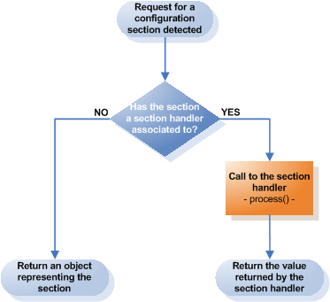

<table cellpadding="10" cellspacing="0" width="100%" border="0"><tr><td valign="top">
<div><a name=""></a><h1>Section Handlers</h1>
  <div class="ref-purpose">Extending the configuration system</div>
 <div class="ref-synopsis"></div>
<h2>Table of Contents</h2>
<ul>

<a href="../Configuration/tutorial_Configuration.SectionHandler.pkg.html#intro">Introduction</a><br />

<a href="../Configuration/tutorial_Configuration.SectionHandler.pkg.html#creating_section_handlers">Creating a section handler</a><br />

<a href="../Configuration/tutorial_Configuration.SectionHandler.pkg.html#enabling_section_handlers">Enabling a section handler</a><br />

<a href="../Configuration/tutorial_Configuration.SectionHandler.pkg.html#requesting_sections">Requesting a configuration section</a><br />
</ul>

 <p></p>
 <span><a name="intro"></a><h2>Introduction</h2><p>Configuration can be organized in sections, which is not bound to a concrete configuration format.<br />
  Sections group configuration settings in order to have them organized according to the purpose they represent in terms of the application.<br />
  However, we may want to handle each section in a different way and assign different classes to load them.</p>
  <p>The Lion configuration system provides an easy way to assign classes to handle concrete sections as well as accessors to get them.<br />
  <a href="../Configuration/__Configuration.html">__Configuration</a> is the class for providing developer's access to their configuration. We can retrieve the configuration linked to a concrete context container by calling the <a href="../Context/__Context.html#methodgetConfiguration">__Context::getConfiguration()</a> accessor.<br />
  The <a href="../Configuration/__Configuration.html">__Configuration</a> class exposes an accessor which provides a way for the developer to request the configuration settings for a specific section: __Configuration::getSection()</p>
  <p>We may also want to create custom configuration sections and classes to handle them. In that sense Lions provides an interface designed for that purpose: <a href="../Configuration/__ISectionHandler.html">__ISectionHandler</a>.<br />
  All we have to do is to implement this interface which defines just one single method: <a href="../Configuration/__ISectionHandler.html#methodprocess">__ISectionHandler::process()</a>. This method receives a callback when Lion intercepts a request to retrieve the associated configuration section. In the other hand, this method will receive an object representing the configuration section with accessors to navigate through the entire section structure.<br />
  This mechanism allows us to ignore details such as where the configuration files are located, parsing the configuration file for the particular section, and opening or closing the file.</p>
  <p></p>
  <p>Any call to get any section from the configuration system will be intercepted by Lion.<br />
  If the requested section has a section handler associated, Lion will execute the <a href="../Configuration/__ISectionHandler.html#methodprocess">__ISectionHandler::process()</a> method and return the obtained result from the section handler instead of the object representing the section.</p></span>
 <span><a name="creating_section_handlers"></a><h2>Creating a section handler</h2><p>Create a section handler is as simple as implement the <a href="../Configuration/__ISectionHandler.html">__ISectionHandler</a>.<br />
  At the same time, implement the <a href="../Configuration/__ISectionHandler.html">__ISectionHandler</a> is as simple as implement the <a href="../Configuration/__ISectionHandler.html#methodprocess">__ISectionHandler::process()</a> method.</p>
  <p>The <a href="../Configuration/__ISectionHandler.html#methodprocess">__ISectionHandler::process()</a> receives a <a href="../Configuration/__ConfigurationSection.html">__ConfigurationSection</a> instance representing the requested section. This object exposes several methods to ease the navigation through the section content.</p>
  <p>i.e., imagine the following configuration file:
    <div class="listing"><pre><ol><li><div class="src-line"><span class="src-php">&lt;?</span><span class="src-id">xml&nbsp;version&nbsp;</span>=&nbsp;<span class="src-str">&quot;1.0&quot;&nbsp;</span><span class="src-id">standalone</span>=<span class="src-str">&quot;yes&quot;</span><span class="src-php">?&gt;</span></div></li>
<li><div class="src-line">&nbsp;</div></li>
<li><div class="src-line">&lt;foobars&gt;</div></li>
<li><div class="src-line">&nbsp;&nbsp;&lt;foo&nbsp;bar=&quot;lion&quot;/&gt;</div></li>
<li><div class="src-line">&nbsp;&nbsp;&lt;foo&nbsp;bar=&quot;rocks&quot;/&gt;</div></li>
<li><div class="src-line">&lt;/foobars&gt;</div></li>
</ol></pre></div></p>
  <p>Now, a valid section handler to transform the configuration section in terms of Foo instances could be like the following one:</p>
  <p><div class="listing"><pre><ol><li><div class="src-line"><span class="src-php">&lt;?php</span></div></li>
<li><div class="src-line">&nbsp;</div></li>
<li><div class="src-line"><span class="src-doc">/**</span></div></li>
<li><div class="src-line"><span class="src-doc">&nbsp;*&nbsp;foobars&nbsp;Section&nbsp;handler</span></div></li>
<li><div class="src-line"><span class="src-doc">&nbsp;*</span></div></li>
<li><div class="src-line"><span class="src-doc">&nbsp;*/</span></div></li>
<li><div class="src-line"><span class="src-key">class&nbsp;</span><span class="src-id">FooBarsSectionHandler&nbsp;</span><span class="src-key">implements&nbsp;</span><span class="src-id">__ISectionHandler&nbsp;</span><span class="src-sym">{</span></div></li>
<li><div class="src-line">&nbsp;&nbsp;&nbsp;&nbsp;</div></li>
<li><div class="src-line">&nbsp;&nbsp;&nbsp;&nbsp;<span class="src-doc">/**</span></div></li>
<li><div class="src-line"><span class="src-doc">&nbsp;&nbsp;&nbsp;&nbsp;&nbsp;*&nbsp;Returns&nbsp;a&nbsp;collection&nbsp;of&nbsp;Foo&nbsp;instances&nbsp;according&nbsp;to</span></div></li>
<li><div class="src-line"><span class="src-doc">&nbsp;&nbsp;&nbsp;&nbsp;&nbsp;*&nbsp;the&nbsp;configuration&nbsp;section.</span></div></li>
<li><div class="src-line"><span class="src-doc">&nbsp;&nbsp;&nbsp;&nbsp;&nbsp;*/&nbsp;</span></div></li>
<li><div class="src-line">&nbsp;&nbsp;&nbsp;&nbsp;<span class="src-key">public&nbsp;</span><span class="src-key">function&nbsp;</span><span class="src-sym">&amp;</span><span class="src-id">process</span><span class="src-sym">(</span><span class="src-id">__ConfigurationSection&nbsp;</span><span class="src-sym">&amp;</span><span class="src-var">$section</span><span class="src-sym">)&nbsp;</span><span class="src-sym">{</span></div></li>
<li><div class="src-line">&nbsp;&nbsp;&nbsp;&nbsp;&nbsp;&nbsp;&nbsp;&nbsp;<span class="src-var">$return_value&nbsp;</span>=&nbsp;<span class="src-key">array</span><span class="src-sym">(</span><span class="src-sym">)</span><span class="src-sym">;</span></div></li>
<li><div class="src-line">&nbsp;&nbsp;&nbsp;&nbsp;&nbsp;&nbsp;&nbsp;&nbsp;<span class="src-var">$foobars&nbsp;</span>=&nbsp;<span class="src-var">$section</span><span class="src-sym">-&gt;</span><span class="src-id">getSections</span><span class="src-sym">(</span><span class="src-sym">)</span><span class="src-sym">;</span></div></li>
<li><div class="src-line">&nbsp;&nbsp;&nbsp;&nbsp;&nbsp;&nbsp;&nbsp;&nbsp;<span class="src-key">foreach</span><span class="src-sym">(</span><span class="src-var">$foobars&nbsp;</span><span class="src-key">as&nbsp;</span><span class="src-sym">&amp;</span><span class="src-var">$foobar</span><span class="src-sym">)&nbsp;</span><span class="src-sym">{</span></div></li>
<li><div class="src-line">&nbsp;&nbsp;&nbsp;&nbsp;&nbsp;&nbsp;&nbsp;&nbsp;&nbsp;&nbsp;&nbsp;&nbsp;<span class="src-var">$foo&nbsp;</span>=&nbsp;<span class="src-key">new&nbsp;</span><span class="src-id">Foo</span><span class="src-sym">(</span><span class="src-sym">)</span><span class="src-sym">;</span></div></li>
<li><div class="src-line">&nbsp;&nbsp;&nbsp;&nbsp;&nbsp;&nbsp;&nbsp;&nbsp;&nbsp;&nbsp;&nbsp;&nbsp;<span class="src-var">$foo</span><span class="src-sym">-&gt;</span><span class="src-id">setBar</span><span class="src-sym">(</span><span class="src-var">$foobar</span><span class="src-sym">-&gt;</span><span class="src-id">getAttribute</span><span class="src-sym">(</span><span class="src-str">'bar'</span><span class="src-sym">))</span><span class="src-sym">;&nbsp;&nbsp;&nbsp;</span></div></li>
<li><div class="src-line">&nbsp;&nbsp;&nbsp;&nbsp;&nbsp;&nbsp;&nbsp;&nbsp;&nbsp;&nbsp;&nbsp;&nbsp;<span class="src-var">$return_value</span><span class="src-sym">[</span><span class="src-sym">]&nbsp;</span>=&nbsp;<span class="src-var">$foo</span><span class="src-sym">;</span></div></li>
<li><div class="src-line">&nbsp;&nbsp;&nbsp;&nbsp;&nbsp;&nbsp;&nbsp;&nbsp;<span class="src-sym">}</span></div></li>
<li><div class="src-line">&nbsp;&nbsp;&nbsp;&nbsp;&nbsp;&nbsp;&nbsp;&nbsp;<span class="src-key">return&nbsp;</span><span class="src-var">$return_value</span><span class="src-sym">;</span></div></li>
<li><div class="src-line">&nbsp;&nbsp;&nbsp;&nbsp;<span class="src-sym">}</span></div></li>
<li><div class="src-line">&nbsp;&nbsp;&nbsp;&nbsp;</div></li>
<li><div class="src-line"><span class="src-sym">}</span></div></li>
</ol></pre></div></p></span>
 <span><a name="enabling_section_handlers"></a><h2>Enabling a section handler</h2><p>Once we have defined a section handler we'll need to let Lion know which concrete section will be handled by it.<br />
  To do that, we'll add a new section-handler directive within the configuration-directives section.</p>
  <p>i.e. continuing with our example, to enable the FooBarsSectionHandler to handle foobars section, will define the following section-handler directive:</p>
  <p><div class="listing"><pre><ol><li><div class="src-line"><span class="src-php">&lt;?</span><span class="src-id">xml&nbsp;version&nbsp;</span>=&nbsp;<span class="src-str">&quot;1.0&quot;&nbsp;</span><span class="src-id">standalone</span>=<span class="src-str">&quot;yes&quot;</span><span class="src-php">?&gt;</span></div></li>
<li><div class="src-line">&lt;configuration&gt;</div></li>
<li><div class="src-line">&nbsp;</div></li>
<li><div class="src-line">&nbsp;&nbsp;&lt;configuration-directives&gt;</div></li>
<li><div class="src-line">&nbsp;&nbsp;&nbsp;&nbsp;&lt;configuration-basedir&gt;config&lt;/configuration-basedir&gt;</div></li>
<li><div class="src-line">&nbsp;</div></li>
<li><div class="src-line">&nbsp;&nbsp;&nbsp;&nbsp;&lt;section-handler&nbsp;name=&quot;foobars&quot;&nbsp;</div></li>
<li><div class="src-line">&nbsp;&nbsp;&nbsp;&nbsp;&nbsp;&nbsp;&nbsp;&nbsp;&nbsp;&nbsp;&nbsp;&nbsp;&nbsp;&nbsp;&nbsp;&nbsp;&nbsp;&nbsp;&nbsp;&nbsp;&nbsp;handler-class=&quot;FooBarsSectionHandler&quot;/&gt;</div></li>
<li><div class="src-line">&nbsp;&nbsp;</div></li>
<li><div class="src-line">&nbsp;&nbsp;&lt;/configuration-directives&gt;</div></li>
<li><div class="src-line">&nbsp;&nbsp;</div></li>
<li><div class="src-line">&nbsp;&nbsp;...</div></li>
</ol></pre></div></p></span>
 <span><a name="requesting_sections"></a><h2>Requesting a configuration section</h2><p>Finally, to request a section within the configuration, we'll use the __Configuration::getSection() method:</p>
  <p>i.e. continuing with our example:
    <div class="listing"><pre><ol><li><div class="src-line"><span class="src-php">&lt;?php</span></div></li>
<li><div class="src-line">&nbsp;</div></li>
<li><div class="src-line"><span class="src-comm">//get&nbsp;an&nbsp;array&nbsp;of&nbsp;Foo&nbsp;instances&nbsp;according</span></div></li>
<li><div class="src-line"><span class="src-comm">//to&nbsp;the&nbsp;configuration:</span></div></li>
<li><div class="src-line"><span class="src-var">$foos&nbsp;</span>=&nbsp;<span class="src-id"><a href="../Context/__ApplicationContext.html">__ApplicationContext</a></span><span class="src-sym">::</span><a href="../Context/__ApplicationContext.html#methodgetInstance">getInstance</a><span class="src-sym">(</span><span class="src-sym">)</span><span class="src-sym">-&gt;</span></div></li>
<li><div class="src-line">&nbsp;&nbsp;&nbsp;&nbsp;&nbsp;&nbsp;&nbsp;&nbsp;&nbsp;&nbsp;&nbsp;&nbsp;&nbsp;&nbsp;&nbsp;&nbsp;&nbsp;&nbsp;&nbsp;&nbsp;&nbsp;&nbsp;&nbsp;&nbsp;&nbsp;&nbsp;&nbsp;&nbsp;&nbsp;&nbsp;<span class="src-id">getConfiguration</span><span class="src-sym">(</span><span class="src-sym">)</span><span class="src-sym">-&gt;</span></div></li>
<li><div class="src-line">&nbsp;&nbsp;&nbsp;&nbsp;&nbsp;&nbsp;&nbsp;&nbsp;&nbsp;&nbsp;&nbsp;&nbsp;&nbsp;&nbsp;&nbsp;&nbsp;&nbsp;&nbsp;&nbsp;&nbsp;&nbsp;&nbsp;&nbsp;&nbsp;&nbsp;&nbsp;&nbsp;&nbsp;&nbsp;&nbsp;<span class="src-id">getSection</span><span class="src-sym">(</span><span class="src-str">'foobars'</span><span class="src-sym">)</span><span class="src-sym">;</span></div></li>
</ol></pre></div></p></span></div>
      </td></tr></table>